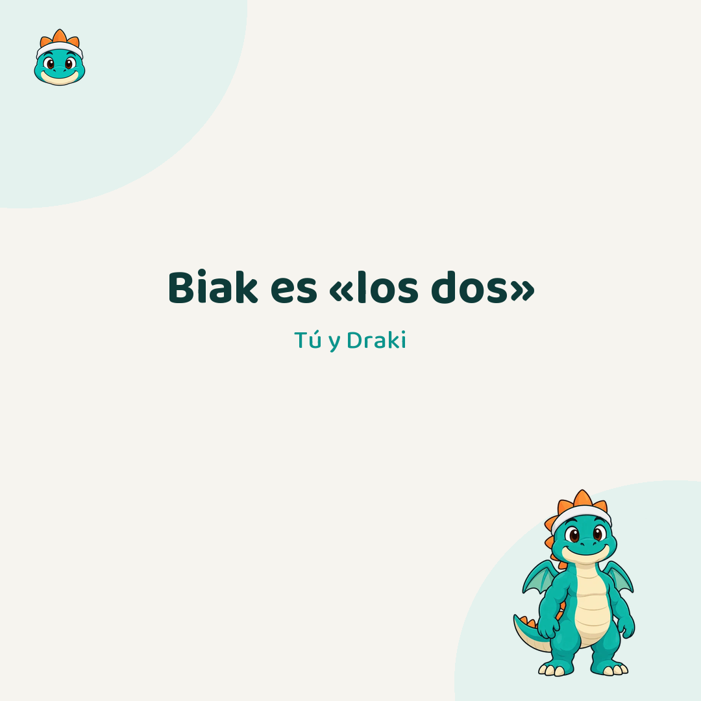
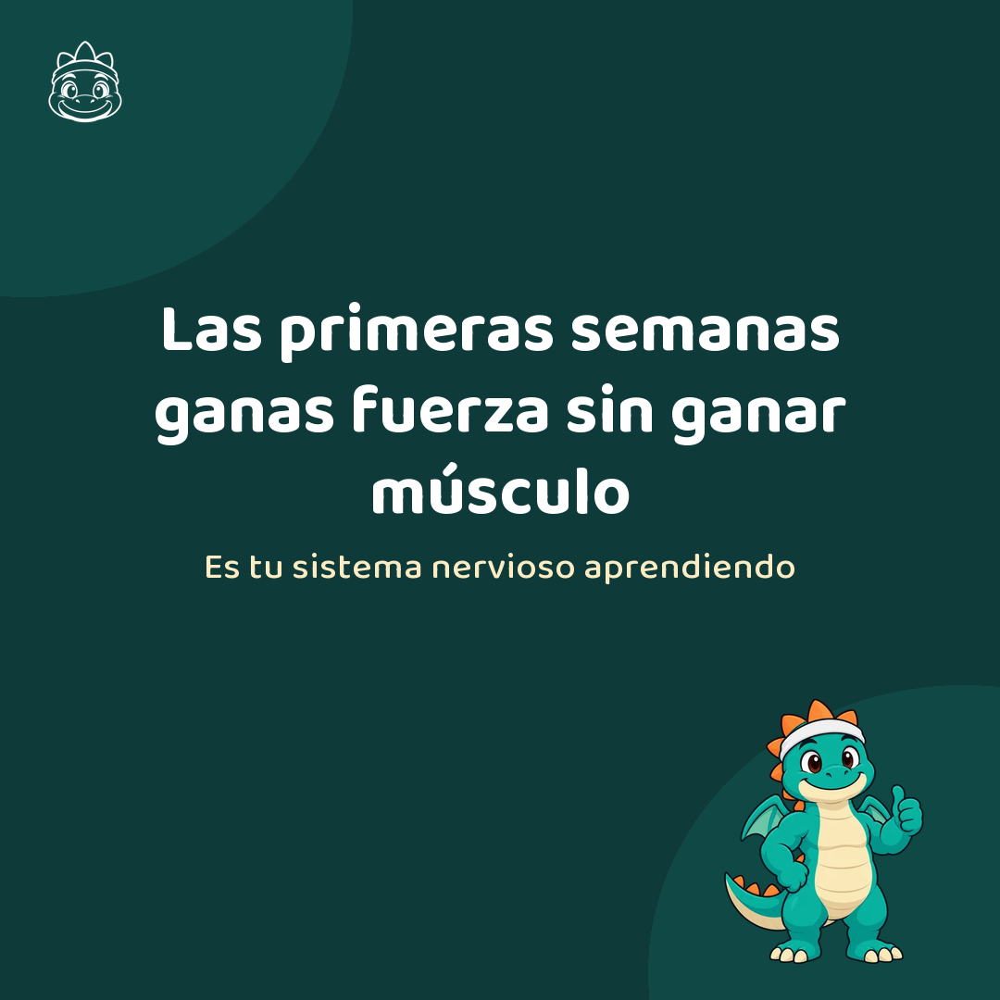
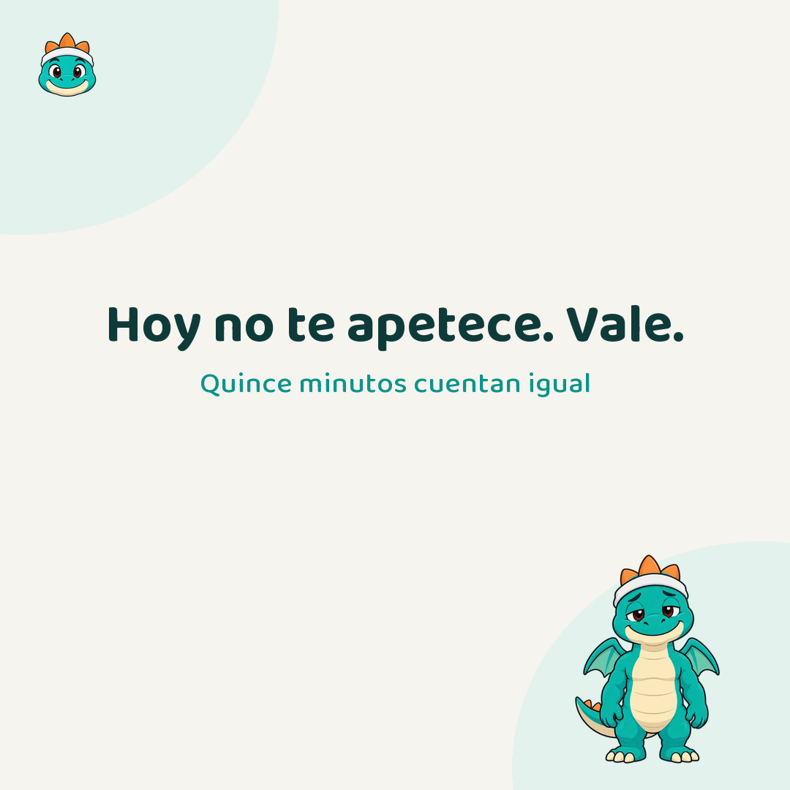
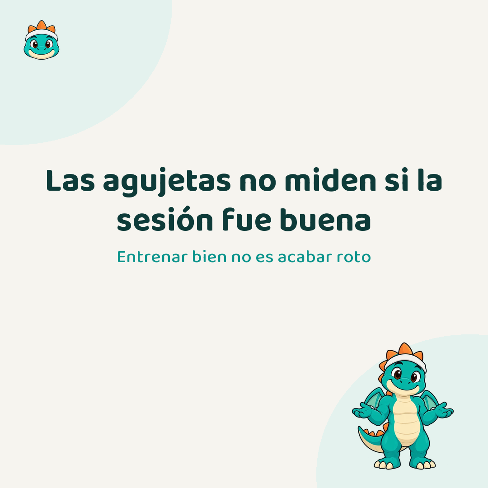
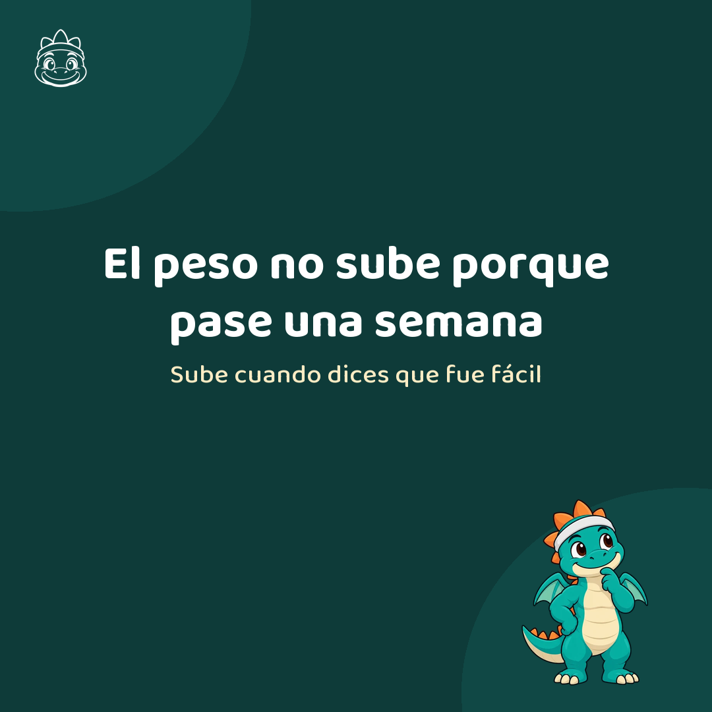
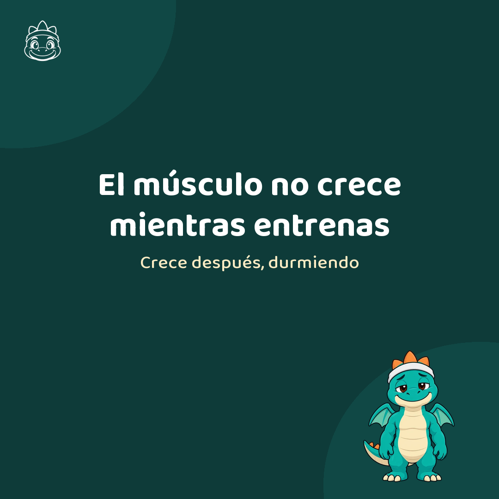
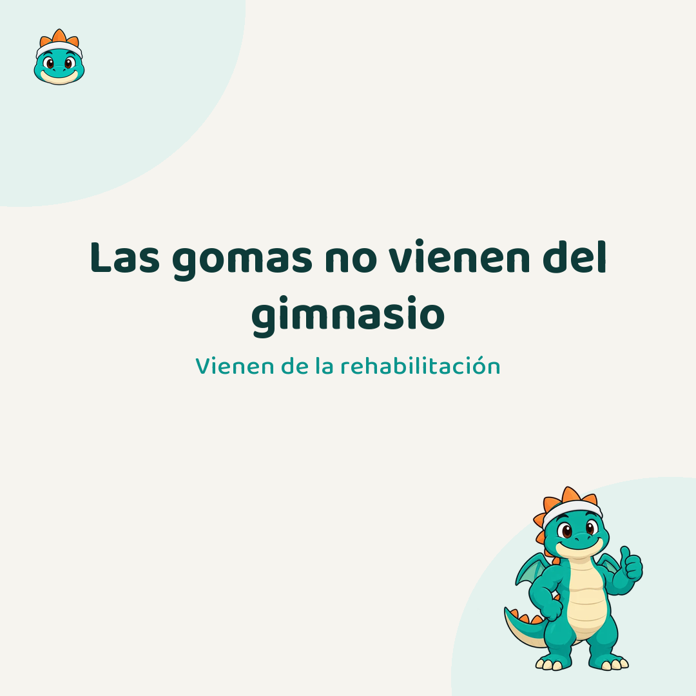
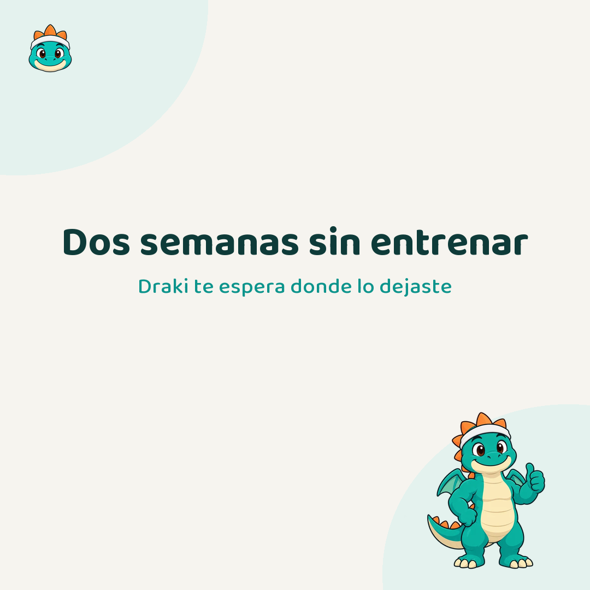

Cuatro semanas a tres por semana. Lunes 7:30, miércoles 19:00, sábado 10:30. El pie va en los tres idiomas: el castellano entero y, debajo, el resumen en euskera y en inglés.
1. Lunes · textoeuskera sin revisar

«Biak» zu eta Draki zarete. BiakFit indarra lantzeko app bat da, daukazunarekin entrenatzeko: gimnasiorik gabe eta presarik gabe.
· · ·
Biak, en euskera, es «los dos».
Tú y Draki.
BiakFit es una app de fuerza para entrenar con lo que tengas: unas mancuernas, una goma o el suelo del salón. Sin gimnasio, sin prisa y sin que nadie te diga que vas tarde.
Entrenamos juntos.
· · ·
Biak means «the two» in Basque: you and Draki. BiakFit is a strength app for training with whatever you have, no gym and no rush.
#biakfit #entrenamosjuntos #fuerzaencasa #entrenamientoencasa #euskadi #donostia
Texto alternativo: Draki, el dragón de BiakFit, saluda sobre un fondo claro junto al texto «Biak es los dos».
2. Miércoles · ejercicioeuskera sin revisar
Kettlebella ez zen gimnasio batean sortu. XVIII. mendeko Errusiako azoketan garia pisatzeko kontrapisua zen, eta pud bat pisatzen zuen: 16 kilo inguru, gaur egun oraindik ohikoena den neurria.
· · ·
La pesa rusa no nació en un gimnasio.
Era el contrapeso con el que se pesaba el grano en los mercados rusos del siglo XVIII. Pesaba un pud: unos 16 kilos, que es justo la más común hoy.
Los mozos del mercado empezaron a competir con ella por aburrimiento. Dos siglos después sigue aquí.
Lo que la hace especial es el balanceo: no levantas el peso, lo lanzas con la cadera y lo frenas. Ahí está el trabajo.
· · ·
The kettlebell was not born in a gym. It was the counterweight used to weigh grain in 18th century Russian markets, and it weighed one pud: around 16 kilos, still the most common size today.
#biakfit #entrenamosjuntos #kettlebell #pesarusa #fuerza #entrenamientoencasa
Texto alternativo: Draki hace un balanceo con pesa rusa: cadera atrás y la pesa entre las piernas.
3. Sábado · textoeuskera sin revisar

Lehen asteetan indarra irabazten duzu muskulurik irabazi gabe: zure nerbio-sistema da, dagoeneko daukazun muskulua erabiltzen ikasten. Horregatik hobetzen da hain azkar hasieran, ispiluak ez aldatu arren.
· · ·
Las primeras semanas ganas fuerza sin ganar músculo.
No es magia: es tu sistema nervioso aprendiendo a usar el músculo que ya tienes. Más fibras a la vez, mejor coordinadas.
Por eso al principio se mejora tan rápido aunque en el espejo no se vea nada. El espejo llega más tarde. La fuerza ya está subiendo.
· · ·
In the first weeks you gain strength without gaining muscle: it is your nervous system learning to use what you already have. That is why you improve so fast at the start even when the mirror does not change.
#biakfit #entrenamosjuntos #fuerza #constancia #empezar
Texto alternativo: Texto sobre fondo verde oscuro con Draki animando en una esquina.
4. Lunes · ejercicioeuskera sin revisar
Flexioa: eskuak sorbalden azpian eta gorputza zuzen burutik orpoetaraino. Aldaka erortzen bazaizu, estutu ipurmasailak. Eta oraindik bat ere ateratzen ez bazaizu, belaunetakoak ere flexioak dira.
· · ·
Flexión.
Manos debajo de los hombros y el cuerpo recto de la cabeza a los talones. Baja hasta dejar el pecho a un puño del suelo.
Si la cadera se hunde, aprieta los glúteos. Eso lo arregla casi siempre.
¿Todavía no te sale ninguna? Las de rodillas también son flexiones. Empieza ahí.
· · ·
Push-up: hands under your shoulders and your body straight from head to heels. If your hips sag, squeeze your glutes. And if you cannot do one yet, knee push-ups are push-ups too.
#biakfit #entrenamosjuntos #flexiones #pesocorporal #entrenamientoencasa
Texto alternativo: Draki en posición de flexión, con el cuerpo recto de la cabeza a los talones.
5. Miércoles · textoeuskera sin revisar

Gaur ez duzu gogorik. Ondo da. Hamabost minutuk berdin balio dute, ez hamabost minutuengatik, katea ez hausteagatik baizik. Indartsu egiten zaituena berrogeigarren saioa da.
· · ·
Hoy no te apetece. Vale.
Quince minutos de core y peso corporal cuentan igual. No por los quince minutos: por no romper la cadena.
Lo que te hace fuerte no es la sesión perfecta. Es la sesión número cuarenta.
· · ·
You do not feel like it today. That is fine. Fifteen minutes count the same, not for the fifteen minutes but for not breaking the chain. What makes you strong is session number forty.
#biakfit #entrenamosjuntos #constancia #habitos #sinculpa
Texto alternativo: Draki dormido sobre un fondo claro, junto al texto «Hoy no te apetece. Vale».
6. Sábado · ejercicioeuskera sin revisar
Ingelesez, mankuernari dumbbell esaten zaio: kanpai mutua. XVIII. mendeko Ingalaterran, kanpai-joleek mihirik gabeko kanpaiekin entrenatzen zuten, herri osoa esnatu gabe praktikatzeko.
· · ·
En inglés, mancuerna se dice dumbbell: campana muda.
Y es literal. En la Inglaterra del siglo XVIII, los campaneros entrenaban con campanas a las que habían quitado el badajo, para practicar sin despertar al pueblo entero.
Aquellas campanas mudas acabaron convertidas en barras con peso en los extremos. El nombre se quedó.
· · ·
Dumbbell means «mute bell». In 18th century England, bell ringers trained with bells stripped of their clapper, so they could practise without waking the whole village.
#biakfit #entrenamosjuntos #mancuernas #historia #fuerza
Texto alternativo: Draki hace un curl de bíceps con mancuerna, con los codos pegados al cuerpo.
7. Lunes · textoeuskera sin revisar

Minberatasunak ez du neurtzen saioa ona izan den. Asteak aurrera joan ahala, entrenamendu berak ez dizu minik emango eta berdin funtzionatzen jarraituko du. Ondo entrenatzea ez da apurtuta bukatzea, ostegunean itzuli ahal izatea baizik.
· · ·
Las agujetas no miden si la sesión fue buena.
Aparecen entre 24 y 48 horas después, sobre todo cuando haces algo nuevo o frenas mucho peso. Con las semanas, el mismo entrenamiento deja de darlas.
Y sigue funcionando igual.
Entrenar bien no es acabar roto. Es poder volver el jueves.
· · ·
Soreness does not measure whether a session was good. After a few weeks the same workout stops causing it and still works just as well. Training well is not ending up wrecked, it is being able to come back on Thursday.
#biakfit #entrenamosjuntos #agujetas #recuperacion #constancia
Texto alternativo: Draki se encoge de hombros junto al texto «Las agujetas no miden si la sesión fue buena».
8. Miércoles · textoeuskera sin revisar

Appak ez dizu pisua igotzen astebete pasa delako. Seriea erraza egin zaizula esaten duzunean igotzen dizu, eta ezin izan duzula esaten duzunean, jaitsi. Horregatik dago galdera bat ariketa bakoitzaren ondoren.
· · ·
La app no te sube el peso porque haya pasado una semana.
Te lo sube cuando tú dices que la serie te resultó fácil. Y cuando dices que no pudiste, baja.
Subir por calendario es cómodo de programar y es la forma más rápida de que alguien lo deje: al que le costaba, le cuesta más cada semana.
Por eso después de cada ejercicio hay una pregunta de tres botones.
· · ·
The app does not raise your weight because a week has gone by. It raises it when you say the set felt easy, and lowers it when you say you could not finish. That is why there is a question after every exercise.
#biakfit #entrenamosjuntos #entrenamientopersonalizado #fuerza
Texto alternativo: Texto sobre fondo verde oscuro con Draki pensativo en una esquina.
9. Sábado · ejercicioeuskera sin revisar
Sentadilla eseri eta altxatzeko keinua da, egunean hogei aldiz pentsatu gabe egiten duzuna. Hori lantzea laurogei urterekin sofatik altxatzen entrenatzea da.
· · ·
Sentadilla.
Es el gesto de sentarse y levantarse, que haces veinte veces al día sin pensarlo. Entrenarlo es entrenar a levantarte del sofá a los ochenta.
Pies a la anchura de las caderas, pecho alto, y bajas sentándote hacia atrás. Si te cuesta el equilibrio, hazla delante de una silla y tócala con el culo antes de subir.
· · ·
The squat is the act of sitting down and standing up, something you do twenty times a day without thinking. Training it is training to get off the sofa at eighty.
#biakfit #entrenamosjuntos #sentadillas #pesocorporal #piernas
Texto alternativo: Draki hace una sentadilla sin peso, con el pecho alto y la cadera atrás.
10. Lunes · textoeuskera sin revisar

Muskulua ez da entrenatzen ari zaren bitartean hazten, gero hazten da, lo egitean. Horregatik, atseden-egunik gabeko plan bat ez da plan gogorra: gaizki egindako plana da.
· · ·
El músculo no crece mientras entrenas. Crece después.
La sesión es el aviso; la obra se hace en las horas siguientes, durmiendo. Por eso un plan que no tiene días de descanso no es un plan duro: es un plan mal hecho.
En BiakFit el descanso está dentro del viaje, no es lo que pasa cuando fallas.
· · ·
Muscle does not grow while you train. It grows afterwards, while you sleep. That is why a plan with no rest days is not a hard plan, it is a badly made one.
#biakfit #entrenamosjuntos #descanso #recuperacion #constancia
Texto alternativo: Draki dormido sobre fondo verde oscuro junto al texto «El músculo no crece mientras entrenas».
11. Miércoles · textoeuskera sin revisar

Goma elastikoak ez datoz gimnasiotik, errehabilitaziotik datoz. Poltsiko batean sartzen dira eta materialik gabe existitzen ez diren bizkarreko ariketak irekitzen dituzte.
· · ·
Las gomas elásticas no vienen del gimnasio: vienen de la rehabilitación.
Se popularizaron a finales de los setenta como herramienta de fisioterapia, para poder graduar la resistencia de un ejercicio sin cargar peso sobre una articulación.
Hoy caben en un bolsillo y abren ejercicios de espalda que sin material no existen. Si entrenas en casa y solo vas a comprar una cosa, que sea esto.
· · ·
Resistance bands do not come from the gym, they come from physiotherapy. They fit in a pocket and open up back exercises that do not exist without equipment.
#biakfit #entrenamosjuntos #gomaselasticas #entrenamientoencasa #espalda
Texto alternativo: Draki animando junto al texto «Las gomas no vienen del gimnasio».
12. Sábado · textoeuskera sin revisar

Bi aste entrenatu gabe. Drakik ez dizu ezer esaten: utzi zenuen lekuan itxaroten dizu, karga berberekin. Itzultzea ez da hutsetik hastea, itzultzea da.
· · ·
Dos semanas sin entrenar.
Draki no te dice nada. Te espera donde lo dejaste, con las mismas cargas y la misma sesión pendiente.
Volver no es empezar de cero. Es volver.
· · ·
Two weeks without training. Draki says nothing: he waits where you left him, with the same loads. Coming back is not starting from zero, it is coming back.
#biakfit #entrenamosjuntos #volver #constancia #sinculpa
Texto alternativo: Draki animando sobre fondo claro junto al texto «Dos semanas sin entrenar».